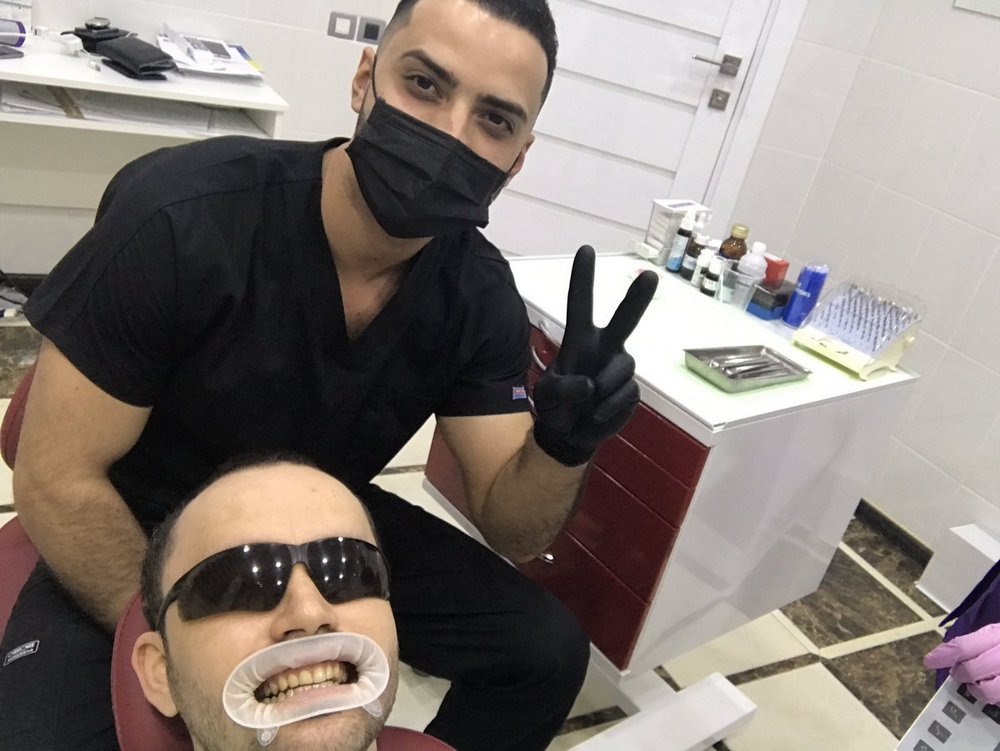
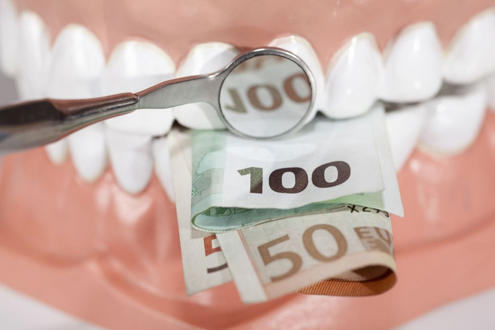
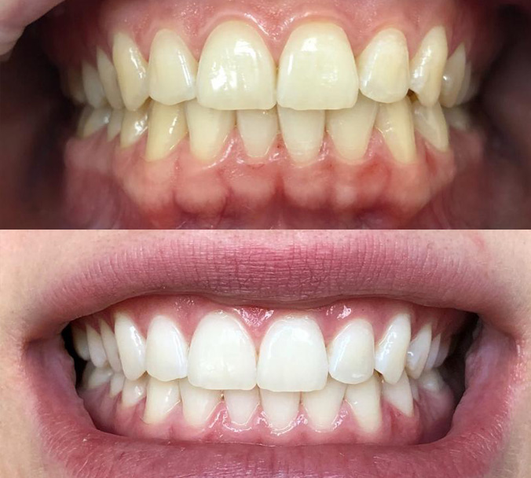
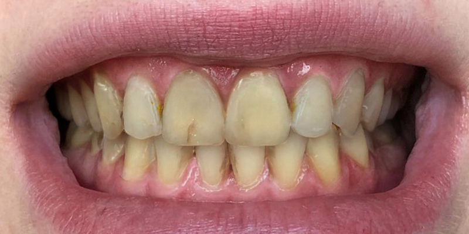
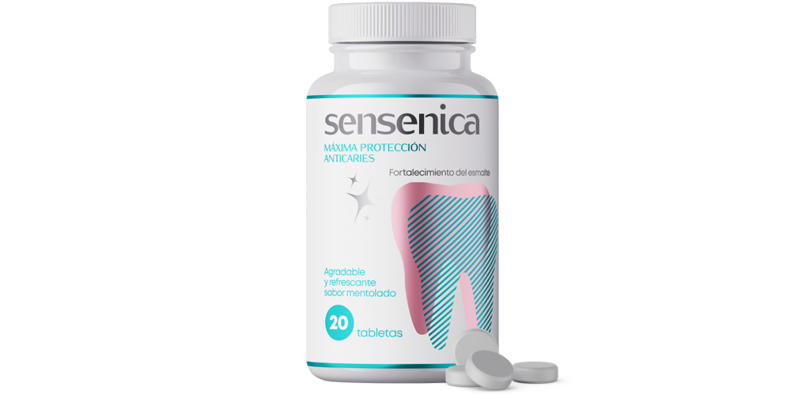
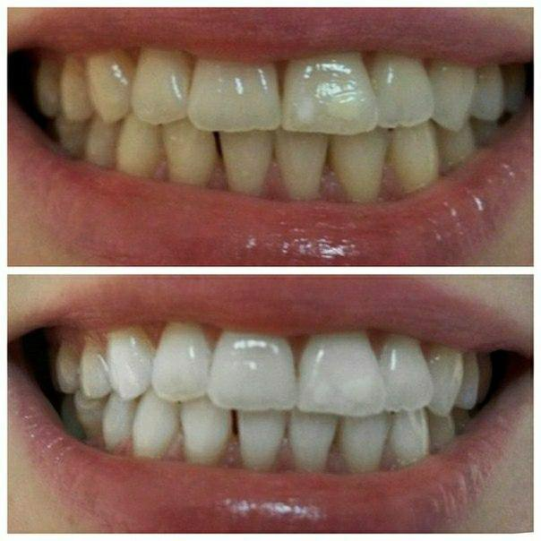
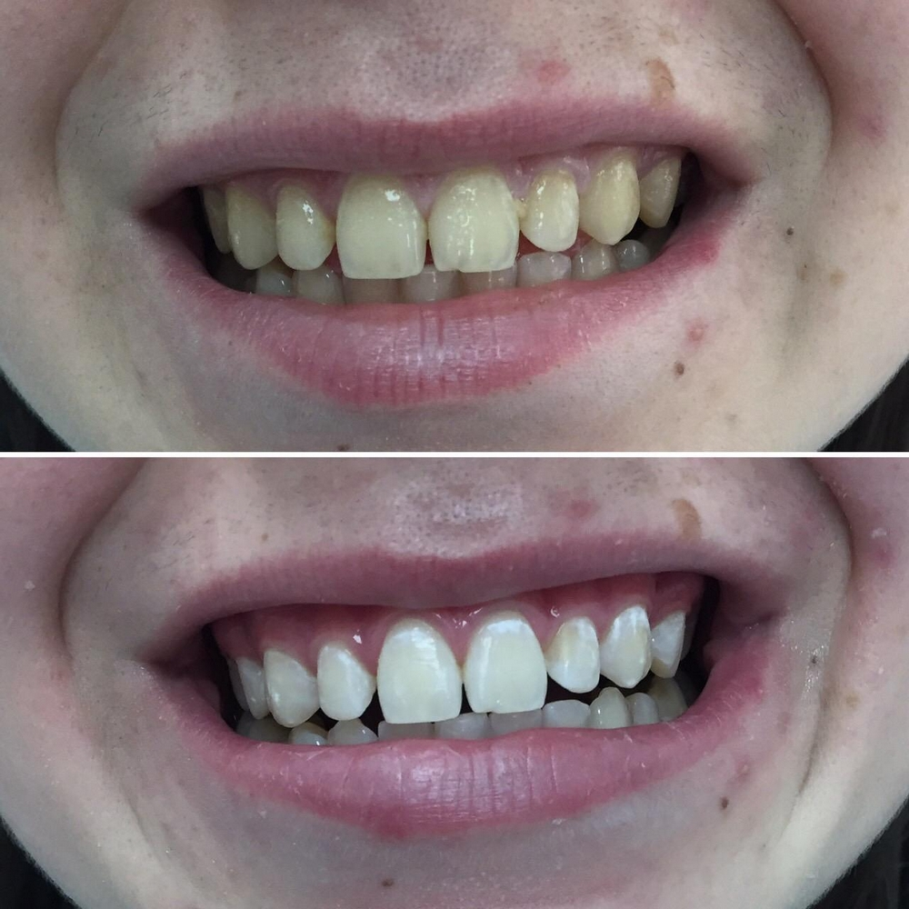
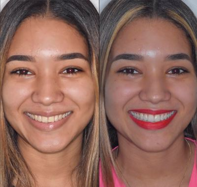
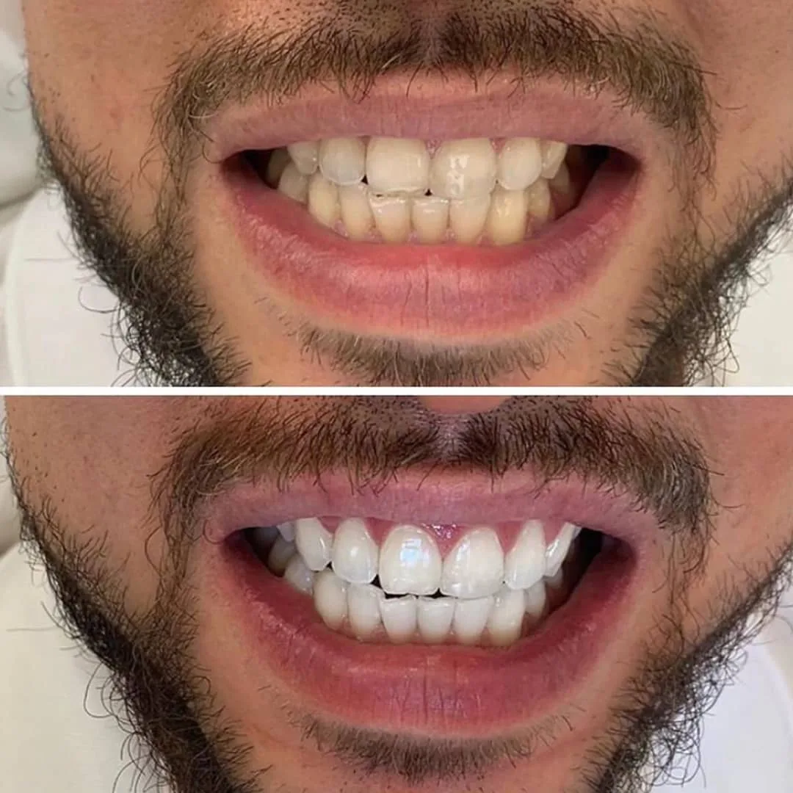
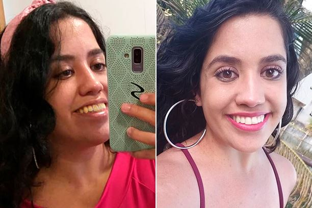

Стоматологическое разоблачение: как в клиниках наживаются на отбеливании и почему домашнее отбеливание безопаснее
Разговоры, смех, прием пищи – везде видно зубы. Красивая улыбка – залог успеха и наша визитная карточка. И это я понял еще в детстве. Тогда же решил стать стоматологом. Годы учебы, практики, огромное количество кредитов, которые брал на оплату учебы — и вот я помощник стоматолога в одной из самых престижных клиник. Я думал, что буду помогать людям, а по факту меня заставляли делать ненужные дорогостоящие процедуры. Если я отказывался, то и зарплата была минимальной. Мне пришлось работать по этой схеме, но как только я выплатил кредит за учебу, то бросил высокооплачиваемую работу, потому что не мог смириться с обманом. Сейчас я не боюсь и наконец-то могу рассказать правду о том, как обманывают людей и разрушают зубы лазерным, химическим и ультразвуковым отбеливанием. Я хочу чтобы каждый знал о том, как можно безопасно и дёшево отбелить свою улыбку не вставая с дивана.

Когда я устроился в стоматологическую клинику, меня ужасно удивило то, как зарабатывают на простых людях. Первое – это диагностика. Если вы пришли сделать один зуб, то врач предлагает сделать восемь. Я лично видел как без причины меняют старые пломбы или удаляют зуб только ради имплантации. Но больше всего меня поразил обман отбеливания зубов, о чем я и хочу сегодня рассказать. Сразу хочу оговорить – этим постом я хочу расставить все точки над сферой косметического отбеливания зубов.

Как отбеливают зубы в клиниках
Многие не знают, но эмаль не влияет на цвет зубов. Дентин, а точнее пигменты в нем, делают зубы белее. Чтобы изменить цвет, необходимо изменить структуру молекул пигмента. Для этого применяются различные средства на основе перекиси водорода, перекиси карбамида или хлорида. Этот самый отбеливающий состав наносится на зубы и с помощью света (лазерное, ультрафиолетовое или LED отбеливание) или смешивания состава с катализатором запускается химическая реакция. Я не буду рассказывать все тонкости процедуры, а скажу о значительных минусах, которые увидел своими глазами.
Во-первых, в большинстве клиник нашей страны используются некачественные дешевые растворы, которые продают с огромной наценкой.
Во-вторых, они очень вредны для всей полости рта.
Для отбеливания используются составы с концентрацией от 25% до 40%. При попадании на слизистую такой препарат вызовет сильнейший химический ожог. Пасты, которые обяжут купить, чтобы ухаживать после отбеливания за зубами, содержат в составе крупный абразив, который стирает эмаль и дентин. Зубы остаются отбеленными какое-то время, а потом начинаются проблемы. Сначала разрушается эмаль, а следом начинаются крошиться зубы, появляется кариес, пульпит, кисты и далее зубы выпадают вовсе. И самое ужасное, что врачей вынуждают максимально выкачивать из людей деньги, предлагая ненужные процедуры. Вот такая была политика клиники.
Если приходит пациент и у него очень тонкие зубы, то конечно берется минимальная концентрация, чтобы зубы не выпали сразу. Но эффект также минимален. Если что и отбелит – налет и камни, максимум – поверхностный слой эмали. А дальше я уже описал как все происходит. Для наглядности покажу отбеливание, которое проводил мой наставник.

Через три месяца пациент вернулся с острой болью. А его зубы были в плачевном состоянии, хотя он и соблюдал все рекомендации. Зубной камень был в пятнах, жуткий налет и самое главное – зубы сильно потемнели и начали крошиться.

Почему я не рассказывал эти ужасы раньше
Точкой в моей карьере стало то, что к нам пришла девушка на отбеливание. Ей сделали очень сильный раствор и после процедуры эмаль стала мягкая и снималась с зубов зондом.
Я уволился и не мог найти новое место работы, так как в каждой клинике была похожая политика. Самым тяжелым для меня было то, что я подписал договор и не мог раньше рассказать все это… Это убивало меня изнутри. С детства я мечтал дарить людям красивые улыбки, а меня пытались принудить портить зубы. Поэтому я завел свой блог, чтобы обезопасить людей от этого кошмара, и в итоге стал заниматься частной практикой. И знаете что? В 8 случаев из 10 ко мне обращались с просьбой отбелить зубы. Я не хотел наносить вред своим клиентам, поэтому начал изучать щадящие способы отбеливания, которые используют в Америке и Европе. И нашел!
Как отбелить зубы без вреда для эмали
Не буду рассказывать как долго и отчаянно искал недорогое, эффективное и безопасное средство, а сразу скажу, что в итоге нашел его – это Sensenica.

Что в нем такого особенного? Меня зацепил состав – он безопасный и даже полезный для зубов. В нем содержится минимальный химический состав, а эффект – максимальный. Обычно никто не дает гарантий, что зубы не потемнеют и не посыпятся, здесь же производитель Sensenica показывает обширное лабораторное испытание. В нем показано, что при отбеливании зубов нет побочных эффектов, как при любом другом способе отбеливания. Sensenica безопасно и и эффективно осветляет глубокие слои зуба не несколько тонов, при этом эффект сохраняется надолго.
Мне нравится, что Sensenica – это не только отбеливание. Создатели учли все нюансы и подобрали такой состав, который помогает поддерживать зубы и десны здоровыми, укрепить эмаль, защитить от кариеса и даже освежить дыхание.

Теперь у меня было два способа отбеливания зубов: быстрый, дорогой и недолгосрочный – привычный метод отбеливания зубов с помощью растворов и ультразвука с лазером. Второй способ отбеливания – Sensenica. Со временем все больше и больше клиентов выбирали второй способ, так как это было дешевле, безопаснее и эффект не отличался от стандартного отбеливания. Единственное, отбеливание зубов с Sensenica занимало больше времени. Кому-то требовалась всего одна неделя, кому-то несколько курсов – зависело от состояния зубов. Но самый главный плюс такого длительного отбеливания – долгосрочный эффект.

Сколько длится эффект от отбеливания и есть ли противопоказания?
Так как состав щадящий и в него добавлены натуральные экстракты, то противопоказаний как при стандартном отбеливании нет. Эффект сохраняется до трех лет. Чтобы его продлить, стоит отказаться от сильно красящих продуктов и раз в полгода проводить поддерживающее отбеливание. Это ни в коем случае не народные или аптечные средства, а тот же самый Sensenica. Также я не рекомендую своим пациентам пасты для отбеливания, продающиеся в супермаркетах. Эти пасты являются не отбеливающими, а скорее осветляющими. Они осветляют зубы за счет своей повышенной абразивности, что для эмали очень опасно. Со временем от таких паст можно получить тот же эффект, что и от химического отбеливания.
Вот такая современная технология позволяет провести эффективное, абсолютно безвредное для зубной эмали отбеливание. И самое главное, что оно доступно каждому желающему.
Качественнее и проще отбеливания вам не найти. Если надумали, то рекомендую заказывать напрямую у производителя. Так надежнее и дешевле. А если успеете заказать до , то еще и получите скидку 50%. Просто изготовитель распродает остатки партии. Я сам лично заказал несколько коробок. И если вы устали скрывать зубы от окружающих и мечтаете о белоснежной улыбке, то просто заполните форму ниже. С вами свяжутся представители производителя Sensenica и ответят на все интересующие вопросы.
Спасибо вам, что рассказали правду. Я и сама жертва стоматологической клиники! Я сделала лазерное отбеливание, а после него у меня посыпались зубы. Теперь у меня огромные долги за лечение и импланты… Надеюсь ваша история поможет не совершать моих ошибок другим людям…
Самая крутая вещь из всех, которые я пробовал. Даже лазерное отбеливание не дает такого эффекта. После него кстати у меня пятна на зубах появились, так что не советую экспериментировать. Денег отвалил гору, а эффекта ноль. А вот с Sensenica эффект держится уже полгода, хотя я много курю и пью кофе.
Я тоже против лазерного отбеливания, сходила один раз. Боль адская, потом ни есть ни пить невозможно недели две. Никогда больше не поведусь.
Это правда! Sensenica на самом деле очень хорошо отбеливают зубы на 4-6 тонов! У меня после первого применения не особо была видна разница, но уже после 3 раза зубы стали гораздо светлее и эффект сохраняется надолго. У меня лично за 3 месяца после отбеливания эмаль не потемнела. И даже с красной помадой зубы выглядят белоснежными!

Еще год назад отбеливала зубы этим средством, эффект до сих пор держится. И самое главное, что до сих пор дыхание свежее, даже по утрам.
Даже не верится, что так можно сильно отбелить зубы…
Практически все, что продают в аптеках и интернете не только не отбеливают, но и вредят! На самом деле могут зубы посыпаться. Но вот что удивительно, Sensenica – это что-то совсем другое. Они реально работают и не вредят да и у них и отзывы хорошие и состав не опасный. Заказывал такие маме, брату и себе на официальном сайте, т.к. там они дешевле всего. Курса хватает чтобы зубы посветлели на несколько тонов.
Я вот боюсь всякими такими средствами пользоваться, думаю они вредят эмали.
именно это средство не вредит. Я вот курить бросил, а зубы все в желто-черном налете были. Пробовал делать проф чистку. Не помогло нифига. А хорошее отбеливание очень дорого выходит. И хорошо, что не сделал, теперь знаю как это опасно. А вот про это средство от коллеги узнал, решил попробовать. Боли никакой не чувствовал и зубы белеть стали уже после 2 раза. А вот такого результата я добился за несколько недель.

Спасибо большое, что рассказали всю правду о стоматологах!
Мне вот тоже никакие пасты, гели и другие штуки для отбеливания не помогли. А лазер ОЧЕНЬ ДОРОГО.
Вы что, не поняли как лазер опасен? Лично у меня от него сверхчувствительность была, а когда смогла нормально есть, то появились пятна на зубах. Отвалила кучу денег, а эффект был ужасный. И только потом в узнала про это средство. Купила, попробовала. Зубы стали беленькие, пятна прошли. Прошло 4 месяца, а белизна такая же! Советую всем, кто хочет качественное и недорогое отбеливание. Вот мой результат:

Впечатляет, закажу себе несколько упаковок.
Это лучшее и самое простое домашнее отбеливание, которое только может быть! Очень давно я хотела отбелить свои зубки хоть чуточку, но было страшно их лишиться совсем. Зубы у меня очень слабенькие, пломбы на каждом зубе, трещинки в эмали, были проблемы с кровоточивостью десен. И все же я решилась попробовать...И не зря. Эффект виден с первого раза, зубки становятся белее и блестят! И самое главное, что зубы не посыпались и дыхание свежее.
Оставьте ваш отзыв:
Ваш комментарий на модерации